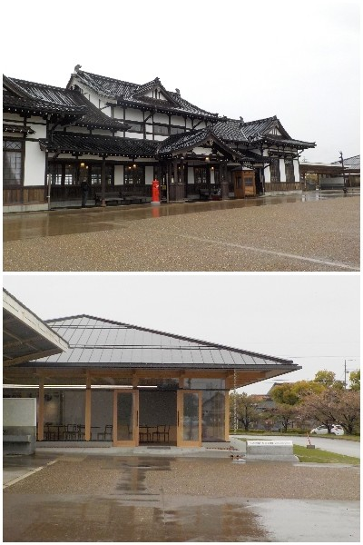
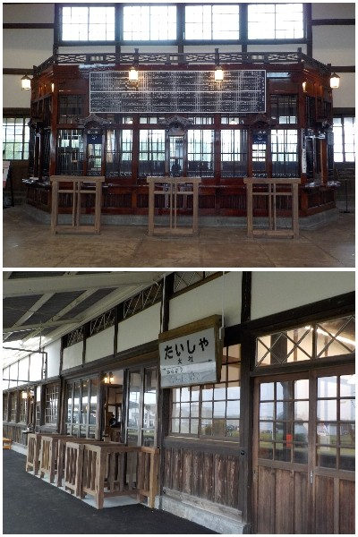
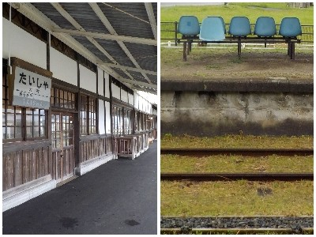
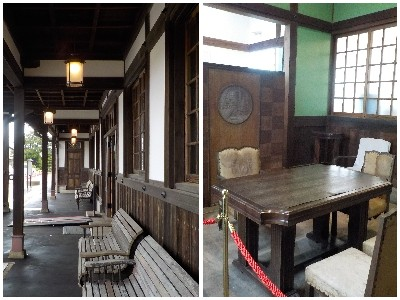

リニューアル初日に旧大社駅を見に行きました。
更新日 : 2026/04/15

有料になったら行かないと思い、無料の初日に行きました。ネガティブな理由ですね。
新しい建物にはトイレがありました。広場的な公園もありました。

大社線に思い入れはありません。知り合いの鉄オタの人が「そんな短い路線があってなんて信じられない。凄い。」って昔言ってた記憶があります。

古そうな感じが歴史を感じさせますね。壊れたプラスチックの椅子が寂しそうで味がありました。

中に入らなくても外観だけでいいかなと思いました。ホントこれ正直な意見です。
歴史とか鉄道が好きな人はきっと見るものが多いんだろうな。